Super Mario
El fontanero italiano de Nintendo, protagonista de Super Mario Bros, símbolo de los videojuegos a nivel mundial.
Los más conocidos e icónicos
El fontanero italiano de Nintendo, protagonista de Super Mario Bros, símbolo de los videojuegos a nivel mundial.
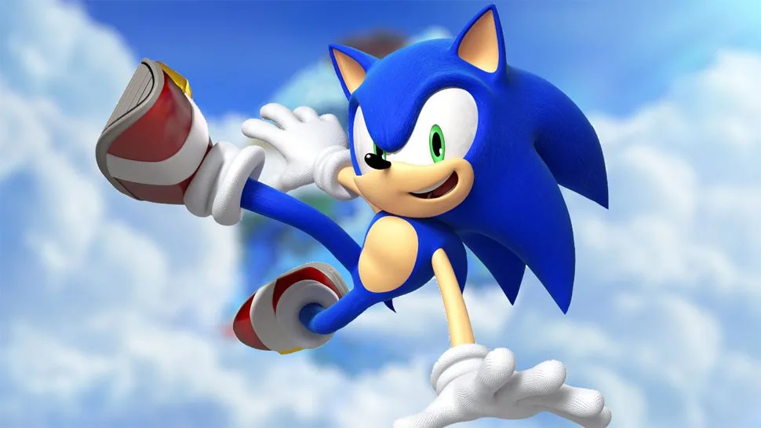
El erizo azul de SEGA conocido por su velocidad y actitud rebelde.
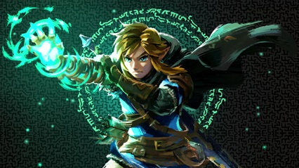
Héroe de la saga The Legend of Zelda, famoso por salvar Hyrule y usar la espada maestra.
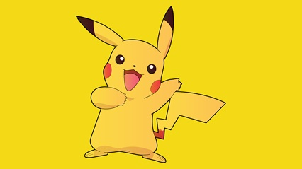
El Pokémon eléctrico más icónico, símbolo de la franquicia Pokémon.
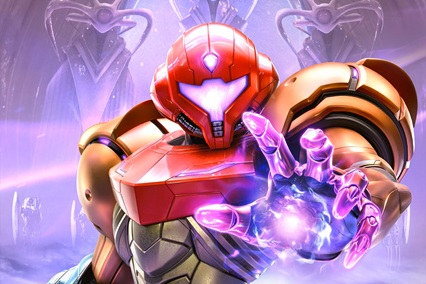
Cazarrecompensas espacial protagonista de Metroid, pionera de personajes femeninos fuertes en videojuegos.

El clásico comecocos amarillo, uno de los primeros íconos de los videojuegos arcade.
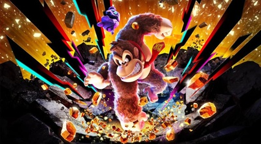
El gorila original que dio inicio a los juegos de plataformas de Nintendo.
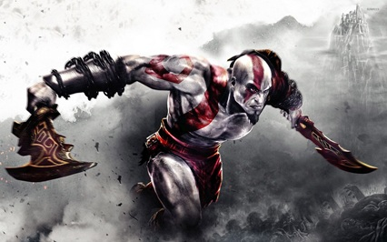
Protagonista de God of War, conocido por su fuerza, ira y mitología griega/nórdica.

Soldado superhumano y héroe de la saga Halo, ícono de Xbox.

Arqueóloga aventurera protagonista de Tomb Raider, símbolo de acción y exploración.
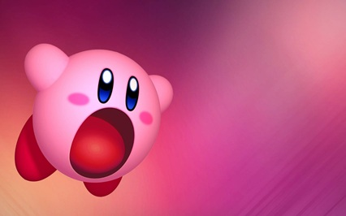
Bola rosa adorable con habilidad de absorber poderes, protagonista de múltiples juegos de Nintendo.

El robot azul clásico que lucha contra malvados jefes con armas copiadas de sus enemigos.

Espía y soldado experto en sigilo, protagonista de la saga Metal Gear.
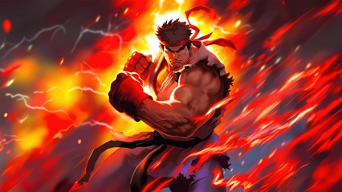
Luchador icónico de Street Fighter, símbolo de los juegos de pelea.
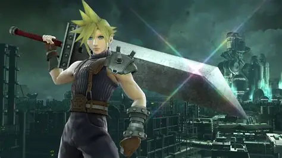
Protagonista de Final Fantasy VII, con su espada Buster y peinado inconfundible.
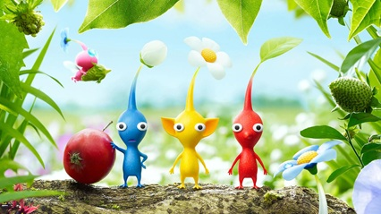
Aunque son varios, destacan por estrategia y originalidad en los juegos de Nintendo.
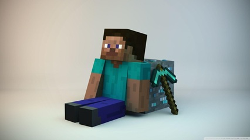
Personaje jugable de Minecraft, símbolo de creatividad y mundo abierto.
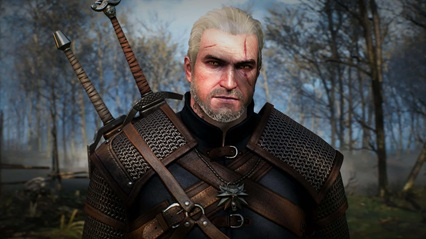
Cazador de monstruos protagonista de The Witcher, conocido por su espada y habilidades mágicas.